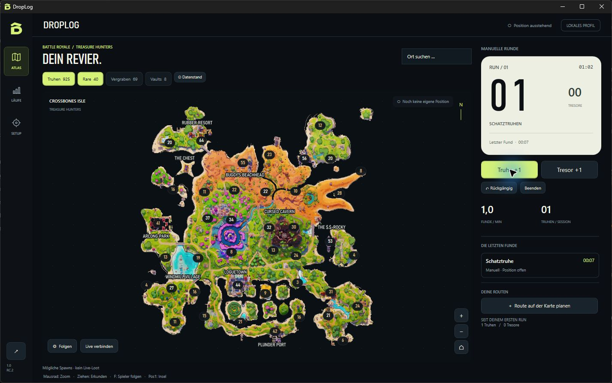

Mehr Karte. Weniger Chaos.
Zoomen, verschieben, Orte finden. Marker gruppieren sich passend zu deinem Blick.
FÜR DEINEN NÄCHSTEN DROP
Weniger suchen. Klarer planen.
Deine Insel, deine Truhen, dein nächster Run —
in einem eigenen Windows-Companion.
EIGENSTÄNDIG. LOKAL. FÜR DEINE ROUTE.
01 — DAS IST DEIN REVIER
NATIVE WINDOWS-APP / KEIN BROWSER-WRAPPERErkunde die Saisonkarte. Filtere mögliche Truhenspawns. Speichere deine Route und behalte deine eigenen Funde getrennt im Blick.

Zoomen, verschieben, Orte finden. Marker gruppieren sich passend zu deinem Blick.
Truhen und Tresore getrennt erfassen. Korrigieren, rückgängig machen, später wiederfinden.
Großer Atlas für den zweiten Monitor oder kompakte Werte zum schnellen Ablesen.
02 — DIE TOKEN-JAGD
Dein nächster Run beginnt mit einer Entscheidung. Wähle dein Zeitbudget und mach aus möglichen Spawns eine Route.
Plane 10, 20 oder 30 Minuten. Die Reihenfolge nutzt Luftlinien zwischen möglichen Truhenspawns.
Erfasse eigene Öffnungen bewusst. Eine fehlende Truhe überspringst du, ohne den Zähler zu erhöhen.
Vergleiche aufgezeichnete Landeplätze und passende Checkpoints deiner früheren Routen.
03 — KLARHEIT STATT HYPE
IM RELEASE CANDIDATE
NOCH IN ENTWICKLUNG
Ein möglicher Spawn ist kein Nachweis für eine Truhe im laufenden Match. Es gibt keine Token-Ortung oder Fundgarantie.
DEINE NÄCHSTE ROUTE WARTET.
DropLog für Windows x64 · Release Candidate 1.0 RC.6
Noch kein öffentlicher Download freigeschaltet. Der Testbuild ist nicht digital signiert. Daten- und Anbieterfreigaben für eine öffentliche Veröffentlichung stehen aus.
NOCH EINE FRAGE?
DropLog sagt keine Zufallsdrops voraus. Die Token-Jagd hilft beim Planen möglicher Truhenspawns und beim Vergleichen deiner eigenen Aufzeichnungen. Sie garantiert weder einen Spawn noch einen Token.
Der manuelle Windows-Kern funktioniert. Epic-Login und der Overwolf-Positionsadapter sind technisch vorbereitet, aber die erforderlichen Freigaben und echte Match-Abnahme fehlen. Automatische Erfassung und Ingame-Overlay sind nicht als fertige Funktionen aktiviert.
Das lokale Journal speichert Runden, Funde und Routen auf deinem Windows-Konto. Der aktuelle manuelle Kern verwendet keine Telemetrie. Webseitenhosting und eine spätere Epic-Anmeldung sind davon getrennte Datenpfade.
Die aktuelle Kompaktansicht ist ein eigenes Windows-Desktopfenster. Ein freigegebenes Ingame-Overlay befindet sich noch nicht im ausgelieferten Funktionsumfang.
Nein. DropLog ist ein unabhängiges Fanprojekt und wird nicht von Epic Games unterstützt oder genehmigt. Fortnite-Material und Marken gehören den jeweiligen Rechteinhabern.